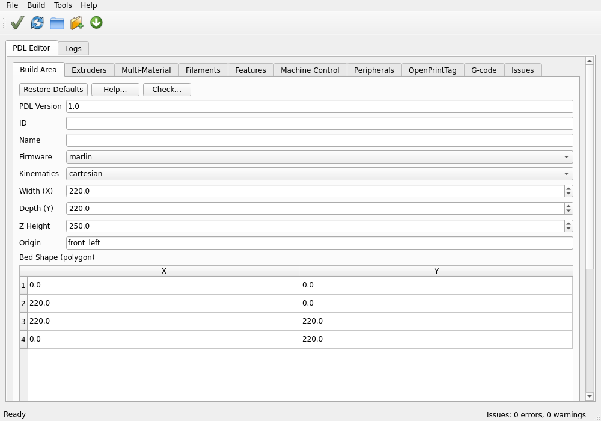
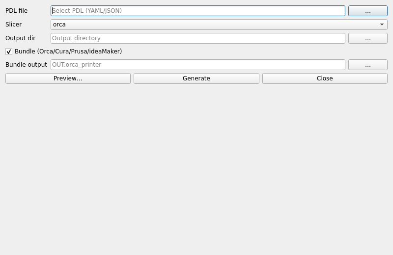
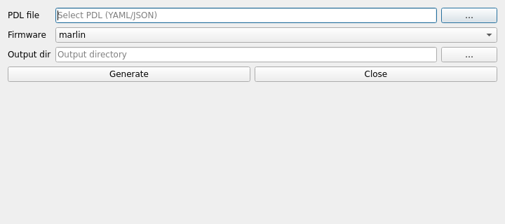
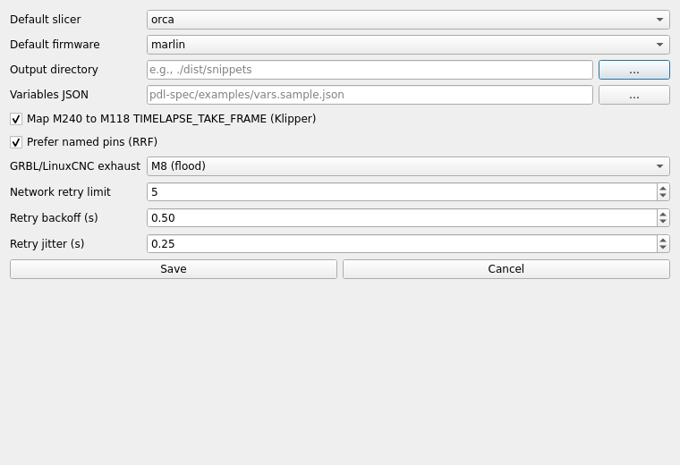
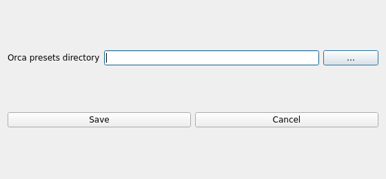

Guide Utilisateur OpenPrintKit (Brouillon)
Ceci est un point de départ en français. Voir docs/user-manual.md (anglais) pour la référence complète.
Introduction
OpenPrintKit (OPK) permet de définir un PDL puis de générer des profils pour plusieurs slicers (Orca, Cura, Prusa/SuperSlicer, Bambu…), avec validations et règles.
Installation
Utilisation (PyPI) :
pip install openprintkit
# avec GUI
pip install 'openprintkit[gui]'
Développement (editable) :
python -m venv .venv
source .venv/bin/activate
pip install -e .
Tâches fréquentes
- Valider:
opk validate ... - Règles:
opk rules --printer P --filament F --process S - Générer:
opk gen --pdl fichier.yaml --slicer orca --out outdir - Packager:
opk bundle --in src --out profil.orca_printer - Installer (Orca):
opk install --src src --dest chemin/presets
Interface graphique
Lancer: opk-gui
Onglets : Zone d’impression, Extrudeurs, Multi‑matériaux, Filaments, Fonctionnalités, Contrôle machine, Périphériques, G‑code.
Astuces : - Dialogues mémorisent les derniers chemins (QSettings). - Outils → Aperçu G‑code / Valider variables. - Générer des profils (prévisualiser avant écriture) et des extraits start/end.
Contributions bienvenues pour compléter/traduire ce guide.
Démarrage rapide (CLI)
Valider des profils d’exemple :
opk validate examples/printers/Longer_LK5_Pro_Marlin.json \
examples/filaments/PLA_Baseline_LK5Pro.json \
examples/processes/Standard_0p20_LK5Pro.json
Exécuter les règles :
opk rules --printer examples/printers/Longer_LK5_Pro_Marlin.json \
--filament examples/filaments/PLA_Baseline_LK5Pro.json \
--process examples/processes/Standard_0p20_LK5Pro.json
Bundle Orca :
opk bundle --in examples --out dist/LK5Pro.orca_printer
Espace de travail :
opk workspace init ./mon-projet
Générer depuis un PDL
opk gen --pdl mon_imprimante.yaml --slicer orca --out outdir [--bundle out.orca_printer]
Slicers : orca, cura, prusa, ideamaker, bambu, superslicer, kisslicer.
Convertisseurs
opk convert --from cura --in FICHIER_OU_DOSSIER --out OUTDIR
opk convert --from prusa --in INPUT.ini --out OUTDIR
Outils G‑code
- Hooks :
opk gcode-hooks --pdl mon.yaml - Aperçu :
opk gcode-preview --pdl mon.yaml --hook start --vars vars.json - Valider :
opk gcode-validate --pdl mon.yaml --vars vars.json
Dépannage
- GUI ferme ? Essayer :
OPK_DEBUG=1 python -m opk.ui.main_windowetQT_QPA_PLATFORM=xcb|wayland. - Binaire de slicer manquant ? Vérifier le PATH (ex.
CuraEngine). - Règles : utiliser « Check… » dans l’UI pour voir les indices en ligne.
Variables d’environnement
OPK_NET_RETRY_LIMIT/BACKOFF/JITTER— politiques réseau.OPK_DEBUG— sorties debug GUI.
Références
- CLI :
docs/cli-reference.fr.md - Aperçu :
docs/overview.fr.md - Aide G‑code :
docs/gcode-help.md
Captures d’écran de l’interface





